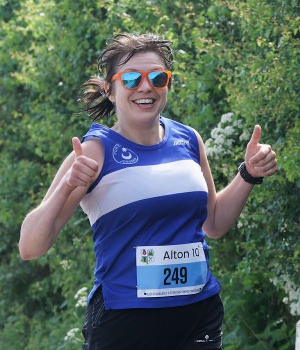
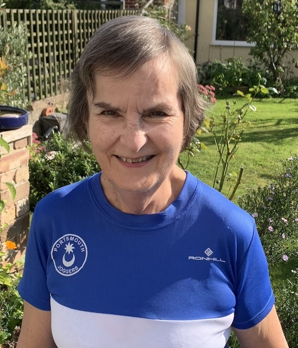
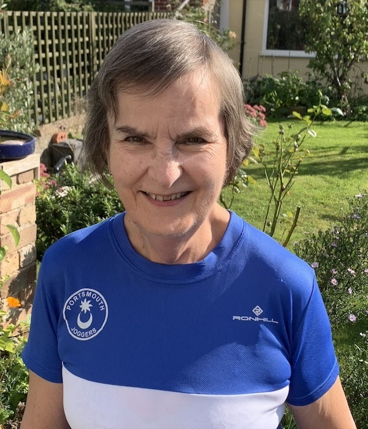
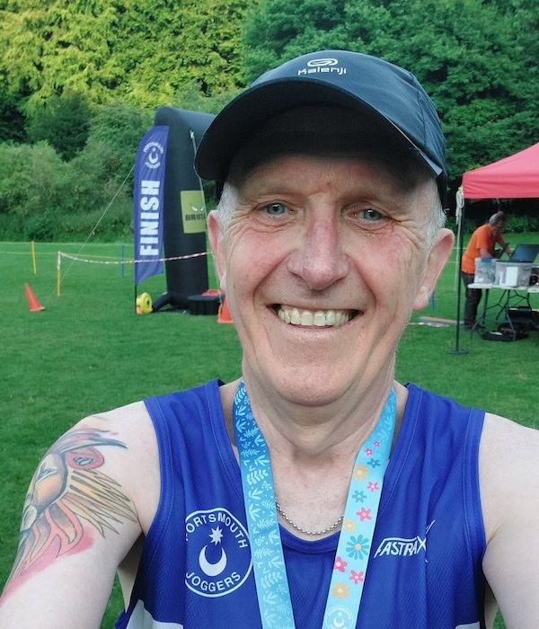
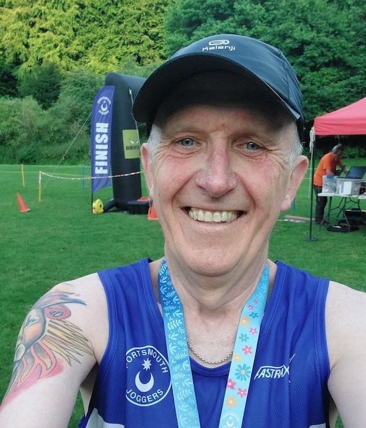

Meet Your Committee and other club officers
The PJC committee is here to serve the PJC runners. We meet regularly to discuss club matters - e.g. club finances, kit, upcoming events/races, charity donations or any other topical item.
Committee

Kate Lewis - Chair
 Sue Clarke - VC & Chief Welfare Officer
Sue Clarke - VC & Chief Welfare Officer
 Sue Hyson - Secretary
Gary Lamb - Treasurer
Sue Hyson - Secretary
Gary Lamb - Treasurer
 Ally Smith

Celia Oxley - Newsletter editor
Ally Smith

Celia Oxley - Newsletter editor
 Chris Ellis - Kit Manager
Chris Ellis - Kit Manager
 Emma Boakes - EDI officer
Emma Boakes - EDI officer
 Sarah Stone - EDI officer

Steve Hyson - Health & Safety Officer
Sarah Stone - EDI officer

Steve Hyson - Health & Safety Officer
Other Lead Roles outside the committee
 Davina Glading - Membership Secretary
Davina Glading - Membership Secretary
 Simon Evans - Welfare Officer
Simon Evans - Welfare Officer